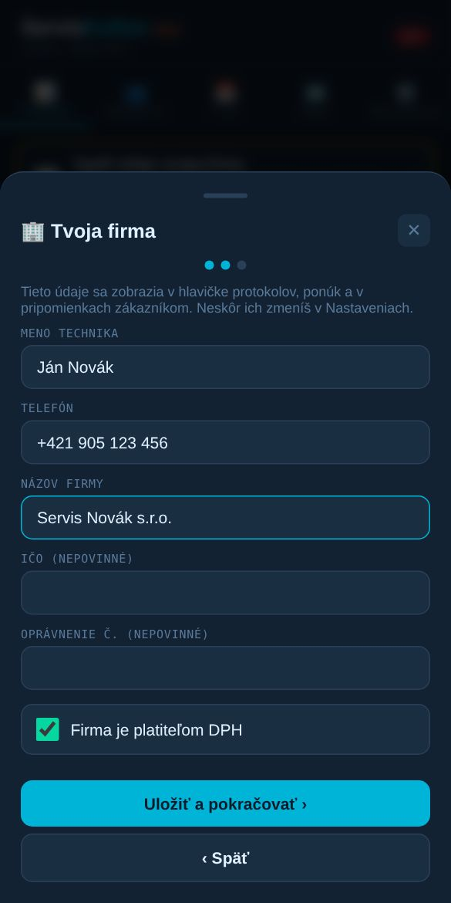
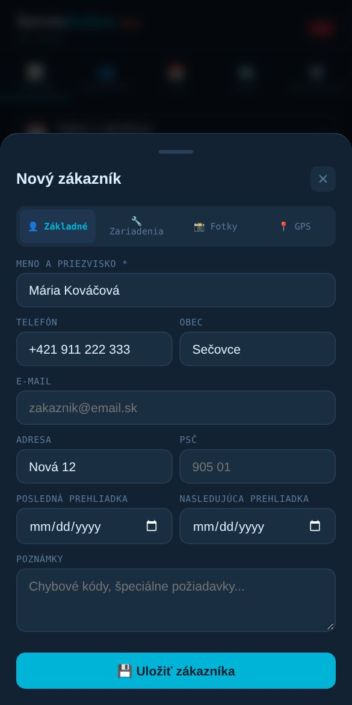
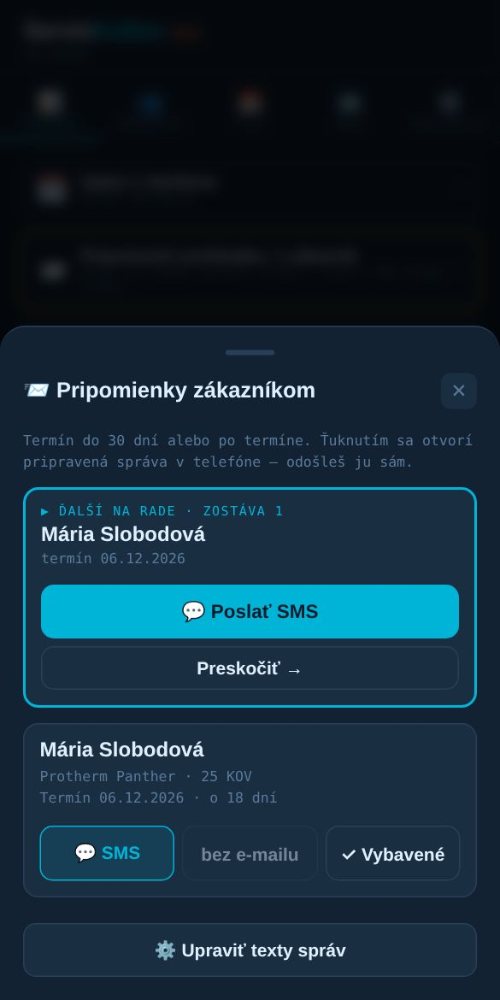
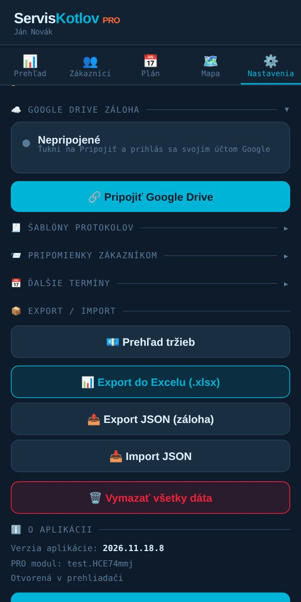
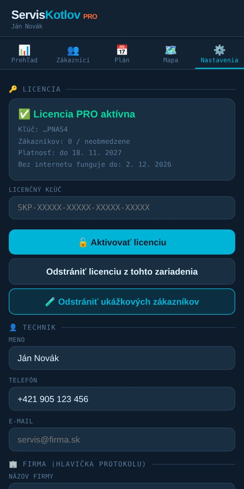
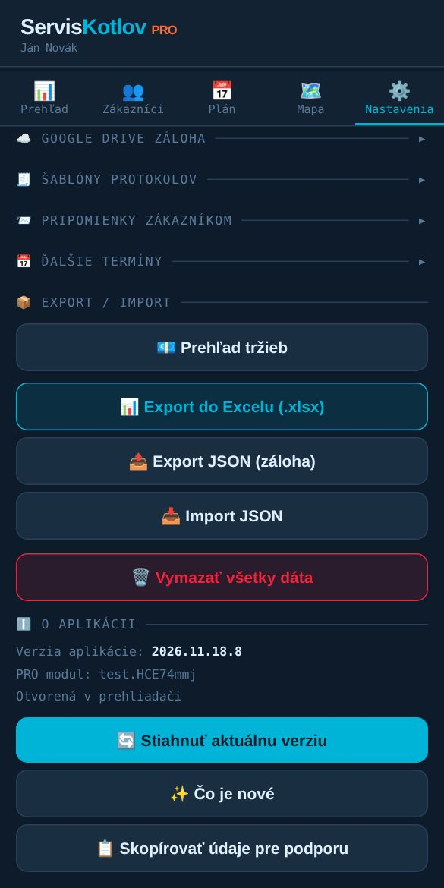

Aplikácia na evidenciu servisov kotlov, tepelných čerpadiel a elektrických kotlov · verzia 2026.11
V skratke: pridáš zákazníka, po servise vyplníš protokol v telefóne, zákazník ho podpíše na displeji
a PDF mu pošleš e-mailom. Aplikácia ti sama postráži termíny ďalších prehliadok a pripomenie ich zákazníkom.
Funguje aj bez signálu – údaje sú uložené v tvojom telefóne.
Aplikácia sa neinštaluje z obchodu – otvoríš ju v prehliadači a pridáš si ju na plochu. Potom sa správa ako bežná aplikácia, má vlastnú ikonu a otvorí sa aj bez internetu.
Android (Chrome)
Otvor adresu aplikácie v prehliadači Chrome.
Ťukni na ⋮ vpravo hore a vyber Inštalovať aplikáciu (alebo Pridať na plochu).
Potvrď. Ikona ServisKotlov sa objaví na ploche.
iPhone (Safari)
Otvor adresu aplikácie v prehliadači Safari.
Ťukni na tlačidlo zdieľania ⬆︎ dole uprostred.
Vyber Pridať na plochu a potvrď Pridať.
Na počítači to isté urobíš v Chrome alebo Edge ikonou inštalácie v adresnom riadku.
2. Prvé spustenie
Pri prvom otvorení ťa privíta krátky sprievodca.
Ťukni na Začať nastavenie.
Vyplň svoje meno, telefón a názov firmy. IČO a číslo oprávnenia sú nepovinné, ale vytlačia sa v hlavičke protokolu. Ak je firma platiteľom DPH, zaškrtni to – ceny v ponukách sa potom rozpíšu bez DPH a s DPH.
Vyber, ako chceš začať: pridať prvého zákazníka, pozrieť si ukážku (štyria vymyslení zákazníci) alebo obnoviť zálohu zo súboru.
Všetko zmeníš neskôr v Nastaveniach – tam si pridáš aj logo a odfotenú pečiatku, ktoré sa vytlačia na protokoloch.

Údaje firmy pri prvom spustení
3. Zákazníci a zariadenia
Na karte Zákazníci ťukni na +.
Vyplň meno, telefón, e-mail a adresu. E-mail sa hodí na posielanie protokolov.
Na karte Zariadenia zadaj kotol (značku, model, výrobné číslo, typ). Výrobné číslo môžeš odčítať fotoaparátom zo štítka s čiarovým kódom.
Do poľa Nasledujúca prehliadka zadaj termín – podľa neho aplikácia stráži, kto príde na rad.
Ťukni na Uložiť zákazníka.
Ak má zákazník viac zariadení (napr. kotol a tepelné čerpadlo), pridáš ich na karte Zariadenia. Každé má vlastné termíny aj protokoly. Na karte GPS doplníš polohu pre mapu a navigáciu.

Nový zákazník
4. Prehľad a termíny
Prehľad je prvá obrazovka. Ukazuje:
počty zákazníkov – v poriadku, s termínom do 30 dní a po termíne,
zoznam Vyžadujú pozornosť – ťuknutím otvoríš zákazníka,
dohodnuté návštevy na dnes a zajtra a upozornenie, komu treba poslať pripomienku.
Na karte zákazníka (ťukni na meno) sú jeho údaje, história servisov, protokoly, ponuky a fotky.
Prehľad
5. Servisný protokol PRO
Otvor zákazníka, prejdi na kartu Protokoly a ťukni na Nový servisný protokol.
Šablóna sa vyberie podľa typu zariadenia – plynový kotol (analýza spalín), tepelné čerpadlo (chladivo, kontrola úniku) alebo elektrický kotol (merania po fázach). Ak bol u zákazníka protokol minulý rok, údaje sa predvyplnia a pri meraniach uvidíš minuloročné hodnoty.
Pri úkonoch ťukni Všetko OK a zmeň len to, čo bolo inak (✕ = chyba, – = netýka sa).
Doplň merania, vymenené diely, závady a záver.
Môžeš priložiť fotky zo zákazníkovej karty – vytlačia sa na strane Fotodokumentácia.
Zákazník sa podpíše prstom na displeji.
Ulož. Protokol sa zapíše aj do histórie servisov a posunie termín ďalšej prehliadky.
Úkony – „Všetko OK“ jedným ťuknutím
Poslanie zákazníkovi
V zozname protokolov má každý protokol tlačidlá:
✉️e-mail – pripraví PDF a e-mail s vyplneným textom. V telefóne vyberieš Gmail, Outlook a pod. a PDF je v prílohe.
🖨️tlač – vytlačí protokol alebo ho uloží cez „Uložiť ako PDF“.
✏️ úprava, 🗑️ vymazanie.
PDF je skutočný dokument s textom – dá sa v ňom vyhľadávať a je malý, takže sa ľahko pošle aj cez mobilné dáta. Prázdny protokol na vypísanie vytlačíš pre prípad, že chceš písať rukou.
Protokoly zákazníka
6. Cenová ponuka PRO
U zákazníka otvor kartu Ponuka a ťukni na Nová cenová ponuka.
Pridaj položky (popis, množstvo, jednotka, cena za jednotku bez DPH, sadzba DPH). Položky môžeš prevziať z protokolu – prácu, diely aj dopravu.
Ulož. Rozpísaná ponuka sa priebežne ukladá, takže sa nestratí ani keď ťa niekto vyruší – na Prehľade ťa pripomienka vráti späť.
Tlačidlom 📄 ponuku pošleš ako PDF (v telefóne rovno cez Gmail či WhatsApp), 🖨️ ju vytlačí a 📤 uloží položky do súboru pre fakturačný program.
Cenová ponuka nie je faktúra. Faktúru vystav vo svojom fakturačnom programe.
Cenové ponuky
7. Pripomienky zákazníkom PRO
Keď sa blíži prehliadka, na Prehľade sa objaví Pripomenúť prehliadku. Po ťuknutí:
Hore je Ďalší na rade – ťukni na Poslať SMS (alebo e-mail). V telefóne sa otvorí pripravená správa, ty ju len odošleš.
Po odoslaní sa hneď ukáže ďalší zákazník. Kto si to neželá, toho preskočíš.
Odoslané pripomienky sa označia, aby si nikomu nepísal dvakrát.
Text správ si upravíš v Nastavenia → Pripomienky zákazníkom. Okrem ročnej prehliadky si môžeš viesť aj ďalšie termíny (odborná prehliadka, skúška, kontrola úniku chladiva) – Nastavenia → Ďalšie termíny.

Pripomienky – jeden po druhom
8. Plán a dohodnuté návštevy
Karta Plán zoradí prehliadky po mesiacoch. Keď sa so zákazníkom dohodneš na termíne, otvor ho a v rámčeku Dohodnutá návšteva zadaj dátum a čas. Potom môžeš:
pridať návštevu do kalendára v telefóne (s pripomenutím hodinu vopred),
poslať zákazníkovi potvrdenie SMS.
Na karte Mapa vidíš zákazníkov na mape a ťuknutím spustíš navigáciu (Google Maps, Waze…).
Plán
9. Záloha a Google Drive
Údaje sú uložené len v tvojom telefóne. Ak telefón stratíš alebo sa pokazí, bez zálohy o ne prídeš. Zálohuj!
Google Drive PRO – odporúčame
Nastavenia → Google Drive záloha → Pripojiť Google Drive.
Prihlás sa svojím účtom Google a povoľ prístup. Pripojenie platí natrvalo.
Zapnutá synchronizácia potom sama ukladá zmeny na tvoj Disk Google a prenáša ich medzi telefónom, tabletom a počítačom pripojenými k tomu istému účtu.
Aplikácia vidí na tvojom Disku len súbory, ktoré sama vytvorila – zálohu a priečinok ServisKotlov-fotky. K ostatným súborom prístup nemá.
Záloha do súboru (aj v bezplatnej verzii)
Nastavenia → Export JSON (záloha) uloží všetky údaje do jedného súboru. Ulož si ho do počítača alebo pošli e-mailom sebe. Späť ho načítaš tlačidlom Import JSON. Export do Excelu slúži na prehľad, nie na obnovu.

Pripojenie Google Drive
10. Licencia PRO
Bezplatná verzia má obmedzený počet zákazníkov. Verzia PRO pridá neobmedzený počet zákazníkov, servisné protokoly s PDF a podpisom, cenové ponuky, pripomienky, zálohu a synchronizáciu cez Google Drive, mapu a ďalšie funkcie.
Licenčný kľúč dostaneš po objednávke (kontakt nájdeš na stránke Kontakt).
Vlož ho v Nastavenia → Licencia a ťukni na Aktivovať licenciu.
Po aktivácii funguje aplikácia aj bez internetu; licenciu si overí, keď budeš online.
Pri výmene telefónu najprv na starom ťukni na Odstrániť licenciu z tohto zariadenia – kľúč sa uvoľní pre nový telefón.

Aktivácia licencie
11. Aktualizácia
Aplikácia sa aktualizuje sama pri otvorení. Ak chceš novú verziu hneď, choď do Nastavenia → O aplikácii a ťukni na Stiahnuť aktuálnu verziu. Aplikácia sa reštartuje, údaje ostanú. Čo je nové, nájdeš pod tlačidlom Čo je nové.
Ak potrebuješ pomoc, ťukni na Skopírovať údaje pre podporu a vlož ich do správy – uvidíme verziu aplikácie a stav licencie (bez údajov o tvojich zákazníkoch).
V Nastaveniach si vyberieš aj svetlý režim, ktorý sa lepšie číta vonku na slnku.

O aplikácii
12. Časté otázky
Funguje aplikácia bez signálu?
Áno. Po prvom otvorení s internetom funguje aj v pivnici či kotolni – zákazníci, protokoly, podpis aj PDF. Synchronizáciu s Google Drive dokončí sama, keď budeš opäť online.
Mám nový telefón. Ako prenesiem údaje?
S PRO: na novom telefóne nainštaluj aplikáciu, aktivuj licenciu (na starom ju najprv odstráň) a pripoj ten istý účet Google Drive – údaje sa stiahnu samé. Bez PRO: na starom telefóne urob Export JSON, súbor prenes do nového a tam daj Import JSON.
Môžem aplikáciu používať na telefóne aj na počítači naraz?
Áno, s PRO a zapnutou synchronizáciou cez Google Drive. Zmeny sa prenášajú automaticky. Ak by ste toho istého zákazníka upravili na dvoch zariadeniach naraz, ostane novšia úprava a aplikácia ťa na to upozorní.
Vidí niekto údaje mojich zákazníkov?
Nie. Údaje sú v tvojom zariadení a na tvojom vlastnom Disku Google. Prevádzkovateľ aplikácie k nim nemá prístup. Podrobnosti sú v zásadách ochrany osobných údajov.
Omylom som vymazal zákazníka. Dá sa to vrátiť?
Ak máš zálohu (súbor JSON alebo Google Drive), obnov ju v Nastaveniach. Po obnove je v Nastaveniach aj tlačidlo Vrátiť dáta spred poslednej obnovy, keby si si to rozmyslel.
Aplikácia píše „Zápis zastavený“. Čo s tým?
Je to poistka – aplikácia neuloží stav, v ktorom by zrazu chýbali zákazníci alebo fotky. Zatvor aplikáciu a otvor ju znova. Ak sa to opakuje, skopíruj údaje pre podporu (Nastavenia → O aplikácii) a ozvi sa nám.